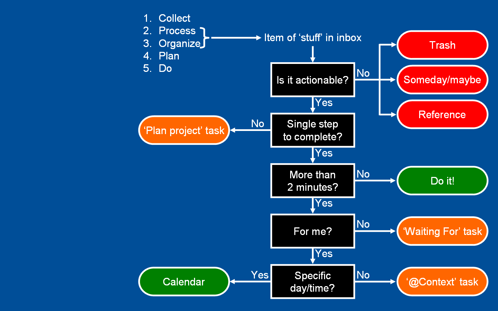

时间管理方法分享
前段时间曾做过关于时间管理的话题讨论，做了演示文档用来概括基本的要点，如下。
是否需要时间管理?
- 依环境而异 （外势）
- 依人而异 （动机）
0.0 总览
| 事件库 | <==> | 当日清单 | <==> | 执行力 |
|---|---|---|---|---|
| GTD 工作法 | 小建议 | 蕃茄钟工作法 |
时间管理的感受：不忘初心
0.1 事件库: GTD 工作法
| 事件库 | <==> | 当日清单 |
|---|---|---|
| GTD 工作法 |
- 收集
- 评估
- 分发
- 执行
- 追踪，回顾
收集
清空大脑
存储介质：
- 可靠
- 方便
- 统一
推荐：手机，纸质记事本 ——> 信任感
评估
确定事件的轻重缓急，为清单制订提供参考
| 重要 | 不重要 | |
|---|---|---|
| 紧急 | B | b |
| 不紧急 | N | s |
分发
上帝的归上帝，凯撒的归凯撒
| 收集箱 | ||
|---|---|---|
| 垃圾箱 | 工作台 | 档案室 |

执行
| 事件库 | <==> | 当日清单 |
|---|---|---|
| GTD 工作法 |
任务分类：
- 单步，但耗时大于 2 分钟
- 项目计划 ——> 下一步:单步，支撑资料
从简，从轻，放手去试错
追踪
工作台 ---
|-----> 档案室
|-----> 垃圾箱
回顾
梳理任务未完成原因，总结，改进
小结
----> 收集箱
|----> 工作台
|--------|----> 档案室
|--------|----> 垃圾箱
- 系统化，第二大脑
- 标准化，处理流程
- 持续推动重要事情，不陷入紧急事情
Evernote 示范
便签 ---- I.收集笔记本(默认)
录音 |---- II.工作笔记本
拍照 | |---- 0.每日清单笔记
邮件 | |---- 1.回顾总结笔记
网页 |---- III.归档笔记本
|----- IV.回收站
0.2 制订清单的小建议
- 保持机动灵活
- 订量，不订时
- 因地制宜：等效替换，顺序变动
- 不贪心，量力而行
- 两小时专注
- 两件紧急重要 + 一件不紧急重要
- 新建，重新开始
原则：做掉事情
0.3 蕃茄钟工作法
执行中的问题
- 启动困难
- 打断，干扰
- 精力消耗快，效率陡降
- 迷失跳转，偏离任务目标
具体流程
工作节奏
工作(2) —— 短休息 —— 工作(2) —— 长休息 —— 工作
| 工作 | 短休息 | 长休息 |
|---|---|---|
| 25m | 5m | 10m |
原则
蕃茄钟不可分割
检查统计
总蕃茄钟数，打断数，单任务消耗量
思路
- 不可分割，提升专注力
- 强制打断，检查思路
- 及时休息，提升续航力
- 回顾检查，量化与改进
小建议
- 干扰: 屏蔽
- 中断: 推迟 + 允诺
- 推动：条件反射（地点，仪式暗示，起动顺序）
关于休息
- 离开工作区域
- 回复精力: 闭目养神，散步
推荐软件
- GTD
- Evernote
- 蕃茄钟
- Pomotodo
0.4 感受
- 时间管理，不会让人变超人
- 时间管理，不是让人变机器
- 时间管理，不是用来论断自己的武器
不忘初心，方得始终
谢谢
可能有用的资料